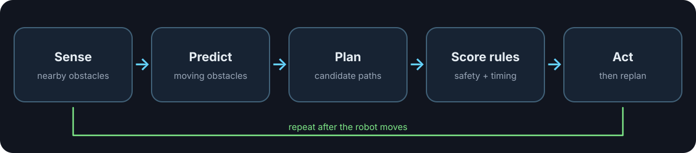

Rule-Aware Robot Navigation
I extended a model-based diffusion planner with temporal rules and online replanning so a simulated car can plan around obstacles, pursue a goal, and reason about waypoint time windows.
See it in simulation
The problem and approach
The task
A robot must reach its goal while avoiding obstacles. In harder scenes it also needs to visit specified places during their time windows, even when moving obstacles are only observed as it travels.
I used Signal Temporal Logic (STL) to express these rules and score candidate trajectories, then replanned over a short horizon as new observations arrived.
Two planning modes
- Global-guided: plan a reference path with the known map, then update actions online.
- Fully online: plan using sensed obstacles and a short moving horizon, without an offline reference.

High-level overview of the online planning loop; the research implementation remains private.
What I built
- Integrated differentiable STL objectives with Model-Based Diffusion to score safety, goal progress, and timed waypoints.
- Implemented global-guided and fully online receding-horizon planning modes.
- Added sensing-based obstacle memory and short-term prediction of moving obstacles for online planning.
- Built simulation scenarios, trajectory visualizations, and a baseline evaluation workflow.
What this demonstrates
Planning and control, JAX-based numerical computing, formal task specifications, simulation design, debugging, and experimental evaluation.
This project extends the original Model-Based Diffusion framework by Pan and colleagues; I did not originate that framework.
Current status
This is ongoing simulation research. The online planners can navigate selected scenarios, while non-convex layouts and dynamic obstacles still expose failure cases. Benchmark definitions, broader evaluation, and ablations are being refined. I am presenting this page as an engineering case study, without claiming a validated performance advantage or a published paper.
Mentored by Varuni Buereddy, PhD student, HiRo Lab. Senior supervision: Prof. Ravi Prakash, HiRo Lab, IISc. Foundational method: Pan et al., Model-Based Diffusion for Trajectory Optimization (NeurIPS 2024).
← Back to portfolio